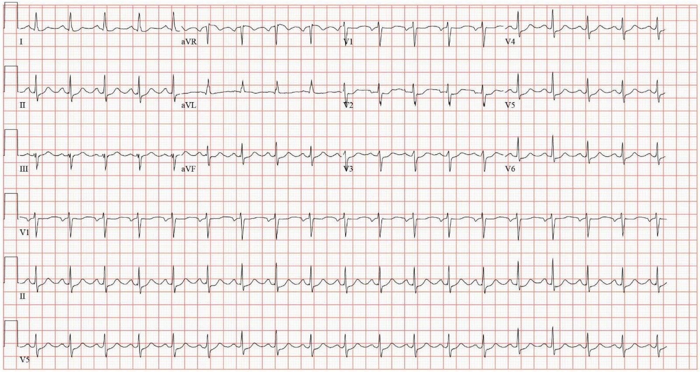
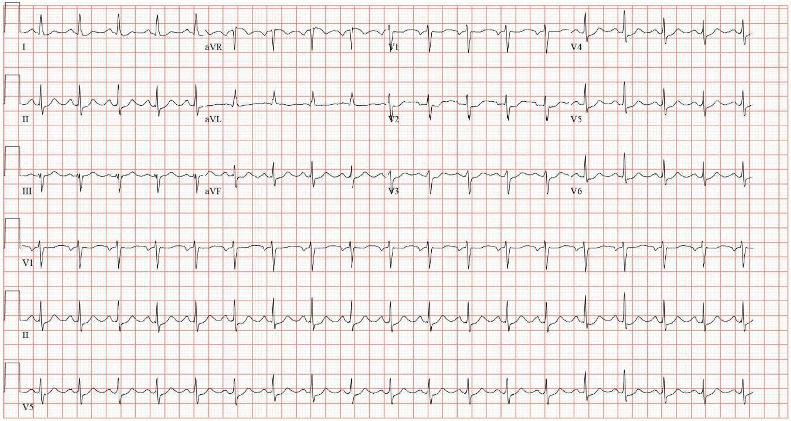
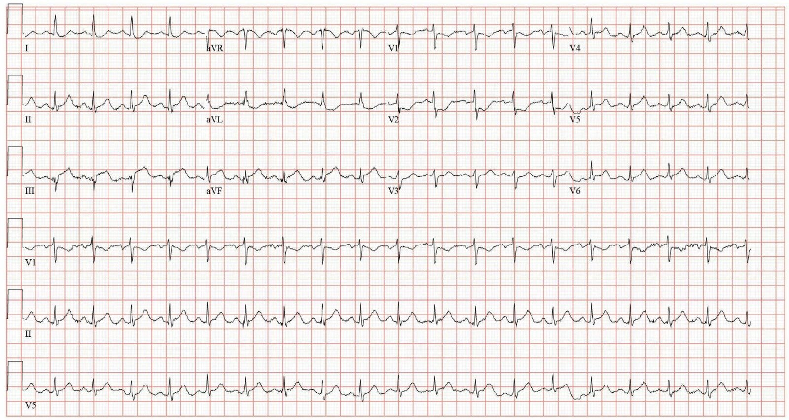
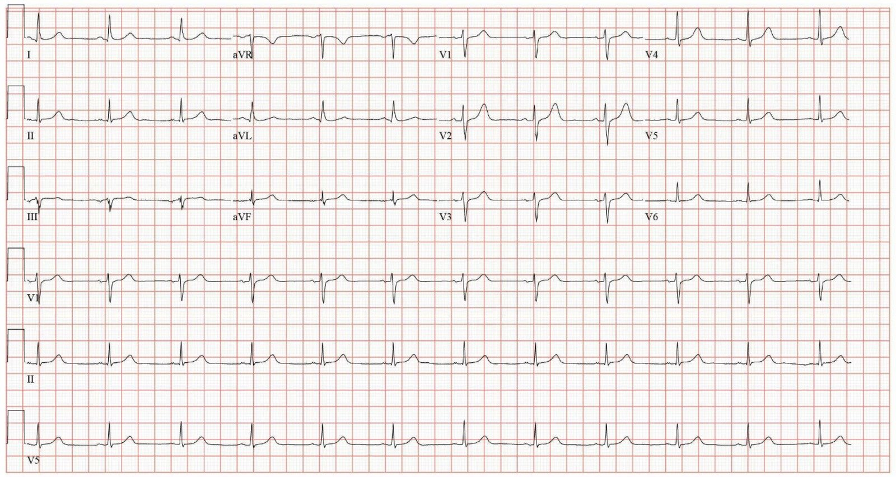
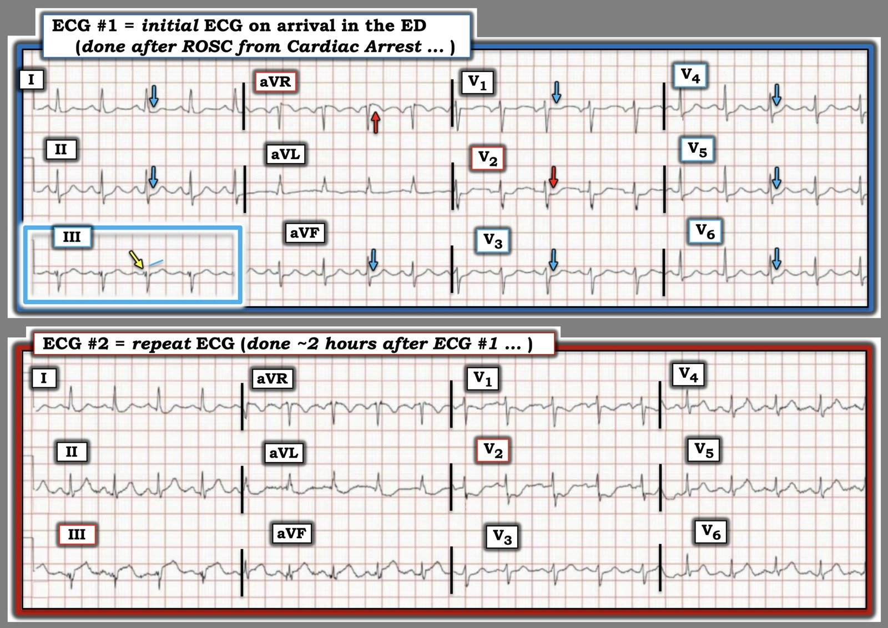

22/05/2026 — STEMI: một tiêu chuẩn không thể đạt tới. NSTEMI: một chẩn đoán vô giá trị.
Bản dịch tiếng Việt của bài "STEMI: An Impossible Standard. NSTEMI: a worthless diagnosis." – Dr. Smith’s ECG Blog. Giữ nguyên toàn bộ 4 hình ảnh của bản gốc.


Một người đàn ông ở giữa độ tuổi 50 đang chơi bóng đá thì ngã gục. Những người xung quanh đã tiến hành hồi sinh tim phổi (CPR) và thực hiện 3 cú sốc theo khuyến nghị của máy AED. Bệnh nhân được đội cấp cứu ngoài viện (EMS) đặt nội khí quản và chuyển đến khoa cấp cứu bằng xe cứu thương. Ghi chép mô tả bệnh nhân thở ngáp (agonal respirations) với đồng tử cố định và giãn (sẽ bàn thêm về điều này sau). Khi đến nơi, ghi được điện tâm đồ sau:


Bạn nghĩ gì?
Một mặt, điện tâm đồ này có thể được xem là khá tinh tế. Nhưng mặt khác, đây là một tình huống cực kỳ đáng ngờ — ngừng tim do rung thất (VF) (giả định cú sốc AED là có chỉ định phù hợp) khi đang gắng sức. Bất kỳ ai nhìn vào điện tâm đồ này cũng phải thấy có MỘT MỨC ST chênh xuống nào đó ở các chuyển đạo trước tim. Chừng đó đã đủ để bắt đầu nghi ngờ và phòng bị trước OMI (nhồi máu cơ tim do tắc). Theo nhận định của tôi (và người khác có thể không đồng ý), chuyển đạo trước tim có ST chênh xuống tối đa là V4, một dấu hiệu có giá trị chẩn đoán OMI thành sau. Queen of Hearts cũng chẩn đoán OMI với độ tin cậy thấp. Hồ sơ ghi chép rất hạn chế, nhưng điện tâm đồ ghi lại gần 2 giờ sau được trình bày dưới đây.


Điện tâm đồ này lẽ ra phải chẩn đoán được một cách hiển nhiên với hầu như bất kỳ ai, và đã ngay lập tức được nhận ra là STEMI. Đáp lại, bác sĩ cấp cứu đã tiến hành chuyển bệnh nhân đến một cơ sở có khả năng can thiệp mạch vành qua da (PCI).
Smith: chậm trễ 2 giờ dẫn đến mất cơ tim ở mức không thể chấp nhận được.
Khi đến đó, hai giá trị troponin I độ nhạy cao (hsTnI) đầu tiên đã có kết quả: lần đầu 58 ng/L, sau đó 13,557 ng/L (tham chiếu: < 35). Như vậy, đúng như dự đoán, đã có rất nhiều cơ tim bị mất.
Kế hoạch được ghi nhận là chụp động mạch vành ngay tối hôm đó. Việc này đã không diễn ra. HsTnI tiếp tục tăng. Điện tâm đồ ghi lại hai giờ sau cho thấy hình ảnh tái tưới máu.


Ngày hôm sau (sau khi ổ nhồi máu đã hoàn tất, với hsTnI đỉnh 26,263 ng/L), ghi chép của khoa tim mạch một lần nữa nêu kế hoạch thông tim, nhưng việc này đã không diễn ra vì những lý do không được ghi lại, song có thể liên quan đến những gì được ghi chép vào ngày hôm sau.
Vào ngày nằm viện thứ 3, bệnh nhân vẫn còn đặt nội khí quản nhưng đã làm theo y lệnh khi giảm mức an thần. Nhóm can thiệp cho rằng không có chỉ định thông tim khi chưa có sự đồng ý chính thức, và vào thời điểm đó vẫn chưa xác định được người đại diện ra quyết định. Ngoài việc đi ngược lại lẽ thường, còn có cả khuyến cáo trong guideline ủng hộ can thiệp trong các tình huống cấp cứu khi không thể có được sự đồng ý sau khi được giải thích (informed consent).
- Tuyên bố đồng thuận chuyên gia năm 2021 của SCAI (được ACC, AHA, HRS tán thành): “Mỗi cơ sở cần có một quy định bằng văn bản về IC [informed consent – sự đồng ý sau khi được giải thích], mô tả quy trình dùng để lấy sự đồng ý, bao gồm thời điểm, việc ghi chép hồ sơ và các vấn đề liên quan đến người đại diện ra quyết định, cũng như những tình huống cho phép ngoại lệ đối với việc lấy IC, chẳng hạn STEMI cấp cứu ở một bệnh nhân không có khả năng đưa ra sự đồng ý.“
- Guideline tái thông mạch vành năm 2021 của ACC/AHA/SCAI: “Ở những bệnh nhân được chụp động mạch vành hoặc tái thông mạch vành, cần cung cấp đầy đủ thông tin về lợi ích, nguy cơ, hệ quả điều trị và các lựa chọn thay thế tiềm năng trong việc tái thông cơ tim qua da và bằng phẫu thuật, khi khả thi, với đủ thời gian để ra quyết định có hiểu biết nhằm cải thiện kết cục lâm sàng.”
Điều này không chỉ giới hạn trong tim mạch học, đây là một đồng thuận liên chuyên ngành. Các văn bản đã công bố của những hội chuyên môn đại diện cho Sản phụ khoa (OB/GYN), Y học cấp cứu, Thần kinh học, Hồi sức tích cực, Tiêu hóa, Ngoại tổng quát, Nhi khoa, Gây mê hồi sức, và tôi chắc chắn còn nhiều chuyên ngành khác nữa, đều nhất quán khẳng định tính đạo đức của việc can thiệp trong các tình huống cấp cứu khi không thể lấy được sự đồng ý sau khi được giải thích.
Ngoài những điều trên, ghi chép thực ra còn nói rằng cả khoa tim mạch tổng quát lẫn nhóm hồi sức tích cực đều cho rằng có chỉ định can thiệp và đã đề xuất hình thức đồng ý do hai bác sĩ cùng ký. Nhóm can thiệp đã viết bệnh án thủ thuật (H&P) ngay hôm đó (ngày nằm viện thứ 3), nhưng một lần nữa vẫn không đưa bệnh nhân đi chụp mạch. Bệnh nhân được rút nội khí quản vào chiều hôm đó.
Vào ngày nằm viện thứ 4, bệnh nhân không có thiếu sót thần kinh và than phiền đau ngực dai dẳng. Bệnh nhân được chụp động mạch vành. Báo cáo thông tim mô tả tắc gần hoàn toàn đoạn giữa động mạch mũ trái do nứt vỡ mảng xơ vữa cấp với dòng chảy TIMI II, cùng các tổn thương không phải thủ phạm ở LAD và RCA. Bệnh nhân được đặt stent ở LCx. Siêu âm tim cho thấy LVEF 50% với giảm động thành dưới-bên.
Chẩn đoán cuối cùng là NSTEMI.
Smith: “NSTEMI” là một chẩn đoán vô giá trị! Nó chẳng có ý nghĩa gì ngoài việc điện tâm đồ không cho thấy ST chênh lên. Việc không có ST chênh lên hầu như không mang ý nghĩa sinh lý nào và lẽ ra không được có bất kỳ hệ quả nào đối với xử trí.
Bàn luận
Một lần nữa, chúng ta thấy rằng tiêu chuẩn cho STEMI gần như không thể đạt tới. Có nhồi máu xuyên thành ở thành bên với tắc cấp LCx do nứt vỡ mảng xơ vữa cấp và dòng chảy mạch vành vẫn còn suy giảm 4 ngày sau đó — vẫn là chưa đủ. Một bệnh nhân đến viện với ngừng tim do rung thất khi gắng sức và điện tâm đồ cho thấy STEMI, được đọc là ** ** STEMI ** ** — vẫn là chưa đủ.
Không, ca này được mô tả là “thay đổi ST thoáng qua” ở một bệnh nhân có chẩn đoán cuối cùng là NSTEMI. Ai quyết định thế nào là thoáng qua? Không hề có điện tâm đồ ghi lại trong suốt 2 giờ sau STEMI hiển nhiên đó, và thậm chí còn lâu hơn nếu tính từ điện tâm đồ đầu tiên vốn cũng đã có giá trị chẩn đoán OMI. Với một khoảng thời gian đủ dài, mọi STEMI đều là thoáng qua! Thay vào đó, cái nhãn NSTEMI này chẳng liên quan gì đến bất kỳ cơ chế sinh lý bệnh quan trọng nào về mặt lâm sàng. Đúng hơn, nó phản ánh thực tế là can thiệp đã bị trì hoãn do lựa chọn của bác sĩ. Tóm tắt bài báo: nghiên cứu cho thấy chẩn đoán cuối cùng STEMI hay NSTEMI chẳng liên quan gì đến tắc mạch hay ST chênh lên, mà chỉ tương quan với thời gian từ cửa đến bóng (door-to-balloon) dưới, so với trên, 90 phút.
Trong ca này, một trong những lập luận được đưa ra là không thể lấy được sự đồng ý, một tình huống vừa hiển nhiên về mặt trực giác về cách xử lý, vừa được đề cập rõ ràng trong các khuyến cáo của guideline phòng khi vẫn còn băn khoăn.
Một cân nhắc khác đôi khi được đặt ra là có nên can thiệp ở bệnh nhân chưa rõ tiên lượng thần kinh hay không, trong ca này là một bệnh nhân đến viện với thở ngáp và đồng tử cố định, giãn. Ngay sau ngừng tim không phải là thời điểm để đưa ra phán đoán này, và nhiều bệnh nhân như vậy (như bệnh nhân này) hồi phục hoàn toàn về thần kinh. Đáng tiếc là không thể nói như vậy về các tế bào cơ tim đã bị nhồi máu của anh ấy.
= = =
==================================
BÌNH LUẬN CỦA TÔI, bởi KEN GRAUER, MD (22/5/2026):
Nỗi thất vọng mà đôi khi chúng ta cảm thấy khi xem lại những ca như ca được BS. Frick trình bày hôm nay — hiện rõ đến mức sờ thấy được trong tiêu đề của bài này = “STEMI: một tiêu chuẩn không thể đạt tới”.
- Tôi khó có thể hình dung bất kỳ điện tâm đồ nào “đủ điều kiện” để được xếp loại là “STEMI” — nếu điện tâm đồ thứ 2 hôm nay (ghi ~2 giờ sau bản ghi ban đầu) lại không đủ điều kiện.
- Với “chủ đề” này trong đầu — tôi tập trung Bình luận của tôi vào một vài điểm bổ sung cho những điểm đã được nêu trong phần bàn luận xuất sắc của BS. Frick.
= = =
Điện tâm đồ ban đầu hôm nay …
Để rõ ràng và dễ so sánh, trong Hình 1 — tôi đã đặt cạnh nhau 2 điện tâm đồ đầu tiên được ghi trong ca hôm nay. Về điện tâm đồ ban đầu (bản ghi TRÊN CÙNG trong Hình 1) — tôi đã cân nhắc 3 kết luận có thể:
- Kết luận #1: Trong bối cảnh nhịp nhanh xoang đáng kể — “con mắt” của tôi bị thu hút bởi sự hiện diện của ST chênh xuống lan tỏa có mặt ở ít nhất 8/12 chuyển đạo (9/12 chuyển đạo nếu tính cả đoạn ST thẳng đuỗn rõ ràng ở chuyển đạo V1). Kết hợp với ST chênh lên ở chuyển đạo aVR — ấn tượng ban đầu của tôi là DSI (thiếu máu cục bộ dưới nội tâm mạc lan tỏa – Diffuse Subendocardial Ischemia). Như đã nhấn mạnh trong Bình luận của tôi ở bài ngày 25 tháng Bảy năm 2024 — DSI không nhất thiết chỉ ra tắc mạch vành cấp. Và mặc dù nhiều bệnh nhân DSI quả thực có bệnh mạch vành nặng — những tình trạng khác (tức là rối loạn nhịp nhanh, tụt huyết áp, thiếu máu, v.v.) có thể gây DSI khi không có bệnh mạch vành nền.
- Kết luận #2: Việc phân biệt DSI với OMI thành sau cấp đôi khi khó khăn. OMI thành sau được gợi ý khi ST chênh xuống ở các chuyển đạo ngực tối đa ở chuyển đạo V2 và/hoặc V3 và/hoặc V4 — trong khi DSI có nhiều khả năng hơn khi mức ST chênh xuống tương đối giữa các chuyển đạo ngực ít khác biệt và/hoặc khi ST chênh xuống tối đa ở các chuyển đạo ngực bên V5 và/hoặc V6. Không chỉ là mức độ ST chênh xuống tương đối — “con mắt” của tôi còn bị thu hút bởi hình dạng của đoạn ST dẹt dạng bậc thềm và chênh xuống ở chuyển đạo V2 (mũi tên ĐỎ hướng xuống trong Hình 1) — vì vậy, cũng như BS. Frick, tôi cũng rất nghi ngờ OMI thành sau cấp trên điện tâm đồ #1.
- Kết luận #3: “Kết luận” thứ 3 hóa ra lại là kết luận tôi nghiêng về nhiều nhất ==> cả DSI lẫn OMI thành sau. Ngoài ra — tôi cho rằng đoạn khởi đầu ST thẳng đuỗn (nhưng không chênh lên cũng không chênh xuống) ở chuyển đạo III của điện tâm đồ #1 là khác với ST chênh xuống rõ ràng ở 2 chuyển đạo dưới còn lại (chuyển đạo II,aVF) — đến mức điện tâm đồ #1 biểu hiện một số đặc điểm của hình ảnh Aslanger, trong đó hình dạng ST-T ở chuyển đạo III có thể đang báo hiệu OMI thành dưới đang diễn ra ở bệnh nhân này, người có các dấu hiệu điện tâm đồ của OMI thành sau kèm theo và DSI (Xem Bình luận của tôi trong bài ngày 14 tháng Mười Một năm 2025 — để thấy một ví dụ khác về những đặc điểm giống Aslanger này).
- Ủng hộ cho Kết luận thứ 3 của tôi — thành phần khởi đầu bị phân mảnh của phức bộ rS ở chuyển đạo III (mũi tên VÀNG), theo kinh nghiệm của tôi, rất thường là dấu hiệu của một “sóng Q giả” cho thấy nhồi máu thành dưới đã xảy ra vào một thời điểm nào đó.
ĐIỀU CỐT LÕI: Về mặt lâm sàng — việc kết luận nào trong 3 Kết luận của tôi là “đúng” không quan trọng — bởi vì NẾU các bất thường ST-T lan tỏa thấy trên điện tâm đồ #1 vẫn tồn tại ở bệnh nhân vừa được hồi sinh sau ngừng tim này — thì sẽ có chỉ định thông tim sớm bất kể thế nào — để xác định giải phẫu (và thực hiện PCI nếu có bằng chứng tắc mạch vành).
- T.B. (P.S.): Như BS. Smith đã cảnh báo (cũng trong bài ngày 25 tháng Bảy năm 2024) — Khi thấy ST chênh xuống lan tỏa trên điện tâm đồ đầu tiên ghi được sau khi tái lập tuần hoàn tự nhiên (ROSC) từ ngừng tim — Thường tốt nhất là ghi lại điện tâm đồ sau khi chờ ~15 phút — để xem các bất thường ST-T lan tỏa có đang hồi phục hay không (như có thể xảy ra nếu ST chênh xuống chỉ đơn giản là hậu quả của tình trạng “không có dòng chảy” thoáng qua do ngừng tim — chứ không phải do nhồi máu cấp).
= = =
Hình 1: So sánh 2 điện tâm đồ đầu tiên trong ca hôm nay.


= = =
So sánh điện tâm đồ #1 với điện tâm đồ ghi lại …
Như BS. Frick đã nêu — điện tâm đồ ghi lại mà tôi đã đưa vào Hình 1 xác lập rõ ràng một STEMI dưới–sau-bên đang tiến triển cấp.
- Thay vì chờ 15 phút rồi ghi lại điện tâm đồ ban đầu hôm nay — đã 2 giờ trôi qua! Sự chậm trễ này thật đáng tiếc — vì nó có thể đã góp phần vào việc không thực hiện thông tim và PCI sớm cho bệnh nhân hôm nay.
- Giá như sự tiến triển rõ rệt của các bất thường ST-T thấy trên điện tâm đồ #2 được ghi nhận chỉ 15 phút sau điện tâm đồ #1 (thay vì chờ 2 giờ) — thì nhu cầu thông tim sớm có lẽ đã đủ thuyết phục để các bác sĩ tiến hành thông tim bất chấp việc bệnh nhân vẫn chưa có đáp ứng.
- ST chênh lên ở cả 3 chuyển đạo dưới giờ đây rõ ràng thỏa mãn tiêu chuẩn STEMI (với ST chênh xuống soi gương rõ ràng ở các chuyển đạo bên cao I và aVL).
- ST chênh lên đặc biệt rõ rệt ở chuyển đạo III của điện tâm đồ #2 ủng hộ nghi ngờ trước đó của tôi về một hình ảnh giống Aslanger — với điểm cần học là đoạn ST thẳng đuỗn đẳng điện ở chuyển đạo III của điện tâm đồ #1, trong bối cảnh ST chênh xuống ở 2 chuyển đạo dưới còn lại, là dấu hiệu tiềm năng của OMI thành dưới đang hình thành.
- ST chênh xuống và sóng T đảo ngược giờ đã rõ mà chúng ta thấy ở chuyển đạo V1 của điện tâm đồ #2, kết hợp với đoạn ST giờ đây sâu hơn rõ rệt và dốc xuống ở chuyển đạo V2 kế cận — ủng hộ nghi ngờ trước đó của tôi từ điện tâm đồ #1 về OMI thành sau, dựa trên đoạn ST dẹt đẳng điện tinh tế ở chuyển đạo V1 và hình dạng của đoạn ST chênh xuống ở chuyển đạo V2.
- Cuối cùng — ST chênh xuống ở các chuyển đạo ngực bên trên điện tâm đồ #1 — giờ đã được thay thế bằng ST chênh lên tại điểm J đang tăng dần ở chính các chuyển đạo ngực bên này, phù hợp với “thủ phạm” LCx được phát hiện khi thông tim.
= = =
Những điểm cần học cuối cùng:
“Cái hay” của việc hồi cứu các bản ghi liên tiếp bằng cách đặt các điện tâm đồ cần so sánh cạnh nhau (như thấy trong Hình 1) — là sau khi bạn đã ghi nhận điện tâm đồ tiến triển ra sao (như thấy trên điện tâm đồ #2) — Bạn có thể quay LẠI với điện tâm đồ ban đầu và hiểu rõ hơn nhiều những điều sau:
- i) Rằng gợi ý tinh tế về một hình ảnh giống Aslanger bên trong hình chữ nhật XANH LAM trên điện tâm đồ #1 giúp phân biệt hình dạng ST-T ở chuyển đạo III với hình dạng khác biệt ( = ST chênh xuống rõ ràng) thấy ở 2 chuyển đạo dưới còn lại;
- ii) Rằng đoạn ST dẹt đẳng điện tinh tế ở chuyển đạo V1 của điện tâm đồ #1 không phải là dấu hiệu bình thường — mà thay vào đó phù hợp với hình ảnh đang tiến triển của OMI thành sau, trở nên rõ ràng hơn nhiều trên điện tâm đồ #2; — và,
- iii) Rằng hình dạng khác biệt của đoạn ST ở chuyển đạo V2 của điện tâm đồ #1, cho thấy ST chênh xuống dạng bậc thềm (mũi tên ĐỎ ở chuyển đạo V2) so với ST chênh xuống dốc lên ở 4 chuyển đạo ngực còn lại — là dấu hiệu báo trước điều có thể sắp xảy ra ( = ST chênh xuống dốc xuống sâu ở chuyển đạo V2 xuất hiện trên điện tâm đồ #2).
- iv) Và khi nhìn lại — lý do khiến ST chênh xuống ở các chuyển đạo V3,V4 của điện tâm đồ #1 có hình dạng dốc lên (chứ không “dẹt dạng bậc thềm”, như ở chuyển đạo V2) — là vì ST chênh xuống ở các chuyển đạo ngực khác này đang bị làm giảm bớt bởi điều sắp trở thành ST chênh lên tại điểm J do “thủ phạm” LCx, hiện rõ trên điện tâm đồ #2.
= = =
=